LECTURE 08 · CHAPTER 5-2
Fischer 投影式、非对映体与光学活性
Fischer projections, diastereomers, and optical activity
1. 这一讲接在哪里
上一讲建立了手性、对映体与 R/S 构型的判定流程，用的是透视式（楔形—虚线）写法。这一讲换一种画法：Fischer 投影式。它不是新知识，而是同一套三维信息的另一种二维表示，读法与透视式不同，容易在此处出错，所以课件单独用一整节处理。
有了第二种画法之后，才能讨论含两个及以上手性中心的体系——这里出现了一个上一讲完全没涉及的概念：非对映异构体（diastereomer）。非对映体与对映体的物理性质差别很大，这个差别既是分离它们的基础，也是光学活性这一整块内容的落点。
本讲对应 Wade《Organic Chemistry》第 5 章的 5-4 至 5-9 节，是第 5 章提纲的后半段：Fischer 投影式、非对映体、光学活性、拆分与不对称合成。
上一讲（Chapter 5-1）回答“一个分子是不是手性的、它的构型是 R 还是 S”；这一讲（Chapter 5-2）回答“多个手性中心时一共有几种异构体、它们之间是什么关系、怎么测量和分离”。两讲合起来才构成完整的立体化学。
2. Fischer 投影式为什么这样画
Fischer 投影式由德国化学家 Hermann Emil Fischer（1852.10.09–1919.07.15）提出，他因嘌呤与糖类的合成研究获得 1902 年诺贝尔化学奖。糖类分子往往有多个手性中心，透视式画起来会变成一团线，Fischer 投影式就是为了让这类分子一眼看清而发明的。
它的约定只有一句话：“horizontal lines forward, vertical lines back”——水平键向前，竖直键向后。十字交叉处的碳就是手性碳，通常不写出。也就是说，横线上两个基团朝向观察者（楔形键），竖线上两个基团背离观察者（虚线键）。
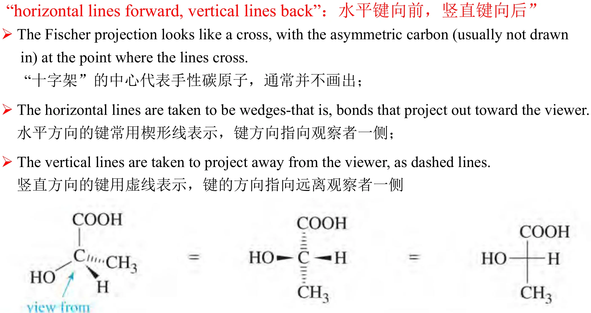
这里最容易犯的错误是把它当成普通的平面结构式来旋转。普通结构式可以任意旋转、翻转，Fischer 投影式不能，因为它已经用横竖两个方向编码了前后关系。旋转会让编码失效。
3. Fischer 投影式允许与不允许的操作
课件把允许的操作限定得非常窄，只有两条：
✓ 允许
- 在纸面内旋转 180°。竖直的虚线键仍然竖直，水平的楔形键仍然水平，编码不变，所以得到的是同一个化合物。
- 交换任意两个基团，构型反转。交换两次即回到原构型——奇数次变换改变构型，偶数次变换保持构型。
✗ 不允许
- 旋转 90°。旋转后原本竖直的键变成水平、原本水平的键变成竖直，前后关系全部错位，等价于把构型反转了。
- 翻出纸面（flip）。这与直接照镜子等价，会把 R 变成 S。
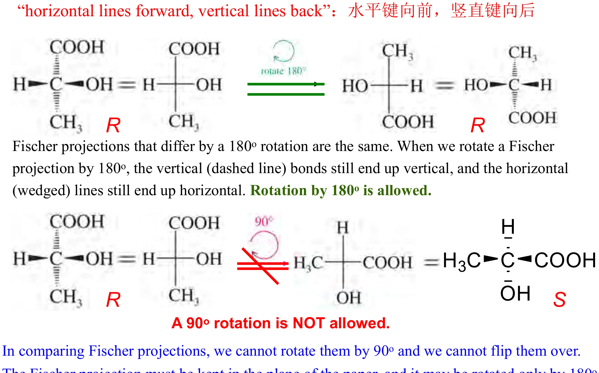
Fischer 投影式只有一个自由度：在纸面内转 180°。任何把分子“提出纸面”或“转过 90°”的操作都会改变构型。判断两个 Fischer 投影式是否代表同一化合物时，只能反复用“转 180°”和“交换两次”这两种手段，看能不能把一个变成另一个。
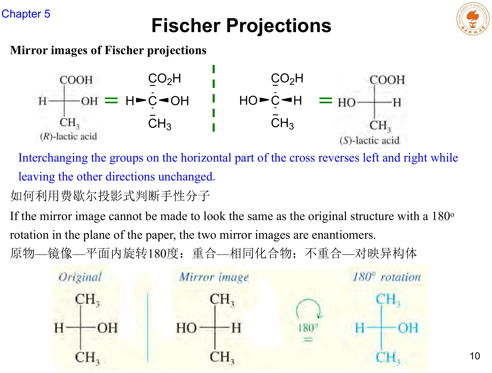
4. 从结构式画出 Fischer 投影式
课件给出一条固定流程。掌握了它，画出 Fischer 投影式就不需要空间想象力，只需要按步骤执行。
- 找出全部手性碳原子。在 (R)-1,2-propanediol 中，C2 是唯一连有四个不同基团（H、OH、CH3、CH2OH）的碳。
- 确定手性碳上各取代基的优先次序。按上一讲的 CIP 规则：先比原子序数，再比后续原子。1,2-丙二醇中为 OH > CH2OH > CH3 > H。
- 把主链竖直放置：优先次序最低的基团之一放竖直方向，主链两端分列上下。这里把 CH2OH 置于顶端、CH3 置于底端。
- 按 R/S 判定决定 OH 与 H 的左右。使最低优先级的 H 朝向远离观察者，观察 1→2→3 的旋转方向：顺时针为 R，逆时针为 S。
- 检查并完成投影式。水平方向的 H 指向观察者，因此在实际判读时需要把结论反转一次——这正是下一节要讲的陷阱。
课件用两个例子走完这条流程：(R)-1,2-propanediol 与 (R)-glyceraldehyde（甘油醛）。甘油醛的优先次序是 OH > CHO > CH2OH > H，它是整个 D/L 体系的基准分子（见第 7 节）。
5. 直接从 Fischer 投影式判 R/S
有了 Fischer 投影式，其实不需要再把它转成透视式才能判 R/S。但必须记住一个方向反转的陷阱：
Fischer 投影式中，位于水平键上的基团指向观察者。如果最低优先级的基团（通常是 H）正好在水平位置上，那么按 1→2→3 画出的旋转方向所对应的构型，与实际构型相反。处理办法有两种，任选一种：
- 交换法：把水平位置上最低优先级的基团与竖直线上的某个基团交换一次，构型反转；判读完再用一次交换把构型改回去。两次交换净效果为零。
- 取反法：直接按 1→2→3 判读，若 H 在水平位置，则把判读结果取反。
判 R/S 的前提是把最低优先级基团转到背离观察者的方向。透视式中这靠旋转整个分子实现；Fischer 投影式不允许旋转（只能转 180°），所以只能靠“交换两次”或“结果取反”来等效地实现。理解了这一点，就不必死记规则。
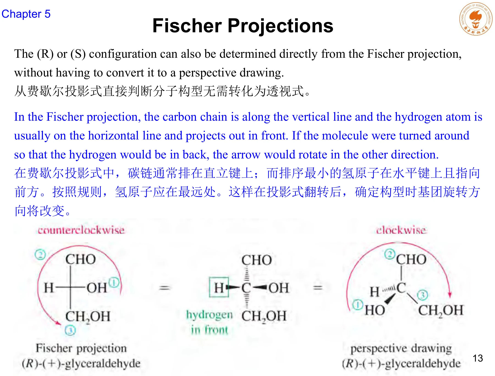
6. 用镜像检验 Fischer 投影式是否手性
课件给出一个可操作的判据：画出原物的 Fischer 投影式，再画出它的镜像，然后尝试在纸面内旋转 180° 使两者重合。
- 能重合 ⟹ 两者是同一化合物，该分子非手性（achiral）。
- 不能重合 ⟹ 两者是对映异构体，该分子手性。
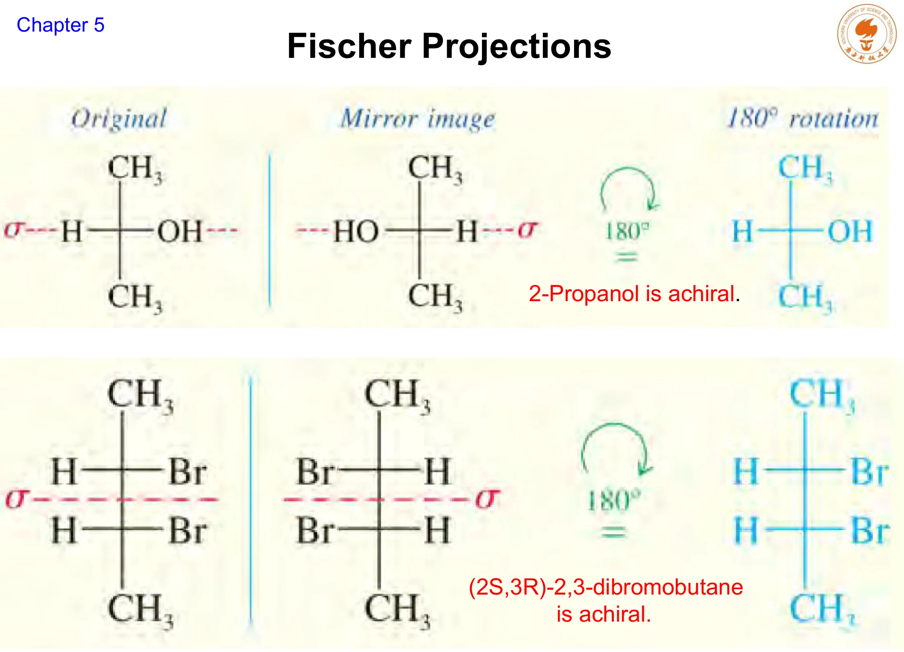
课件用四个分子演示了这一判据，其中最重要的是 2,3-二溴丁烷的两个立体异构体：
| 分子 | 手性？ | 原因 |
|---|---|---|
| 2-propanol 异丙醇 | 非手性 | 没有手性碳（C2 连两个相同的 CH3） |
| (2S,3R)-2,3-dibromobutane | 非手性 | 分子内有镜面，是 meso 内消旋体 |
| (R)-1,2-propanediol | 手性 | 只有一个手性中心，镜像不能重合 |
| (2S,3S)-2,3-dibromobutane | 手性 | 两个手性中心构型相同，无内对称面 |
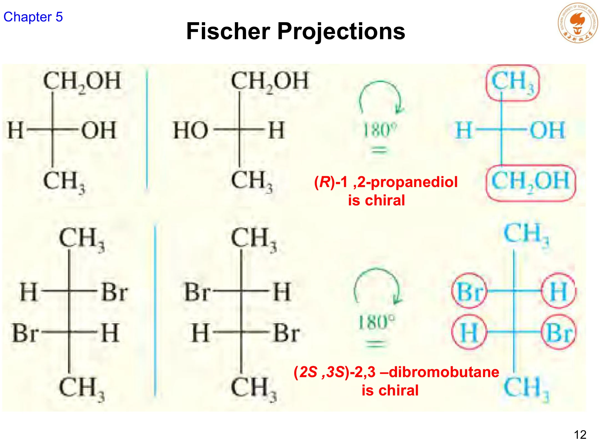
7. 绝对构型、相对构型与 D/L 体系
这一节涉及一个容易被忽略的历史转折点。
相对构型（relative configuration）指的是两个分子之间彼此的空间关系——如果我们知道 A 是 R，那么由 A 出发不发生断键反应得到 B，B 的构型也就可以确定。在不打断手性碳上任何键的反应中，相对构型保持不变。课件举了 (R)-2-butanol 的例子：知道名字就能画出准确的三维结构。
但“相对”意味着需要一把标尺。绝对构型（absolute configuration）指的是原子在空间中的真实取向。在 1951 年之前，化学家只能确定相对关系，无法确定哪个对映体真的是 R。1951 年，X 射线晶体学首次直接测出了原子在晶体中的空间取向，绝对构型才第一次被实验确定——而此前靠化学方法推断的整套相对关系，事后被证明是正确的。
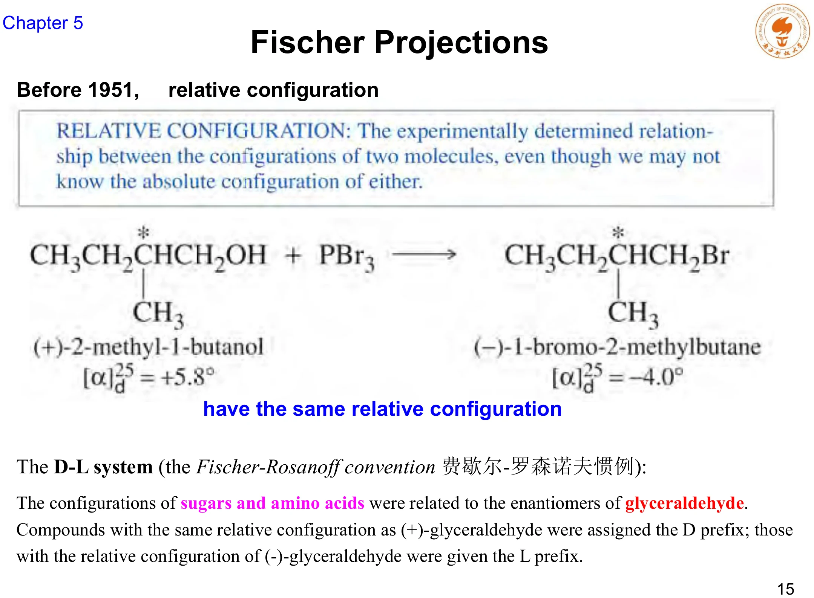
D/L 体系（Fischer–Rosanoff 惯例）
在 R/S 体系普及之前，糖类与氨基酸使用的是 D/L 标记，它由 Fischer 与 Rosanoff 建立，故称费歇尔—罗森诺夫惯例。规则是：以甘油醛的两个对映体为基准——
- 与 (+)-甘油醛 构型相同的，标为 D；
- 与 (−)-甘油醛 构型相同的，标为 L。
之所以能这样推广，是因为糖可以从醛端氧化降解，逐级缩短碳链直到甘油醛，从而把任意一个糖的构型与基准挂上钩。氨基酸也用同一套标记（如 L-丝氨酸、L-谷氨酸）。
D/L 说的是构型（与甘油醛基准的空间关系），(+)/(−) 说的是旋光方向（实测的旋光符号）。两者没有必然联系：D 构型的分子既可能是 (+)，也可能是 (−)。同理，R/S 也不能预测旋光方向——这一点第 11 节还会再强调一次。
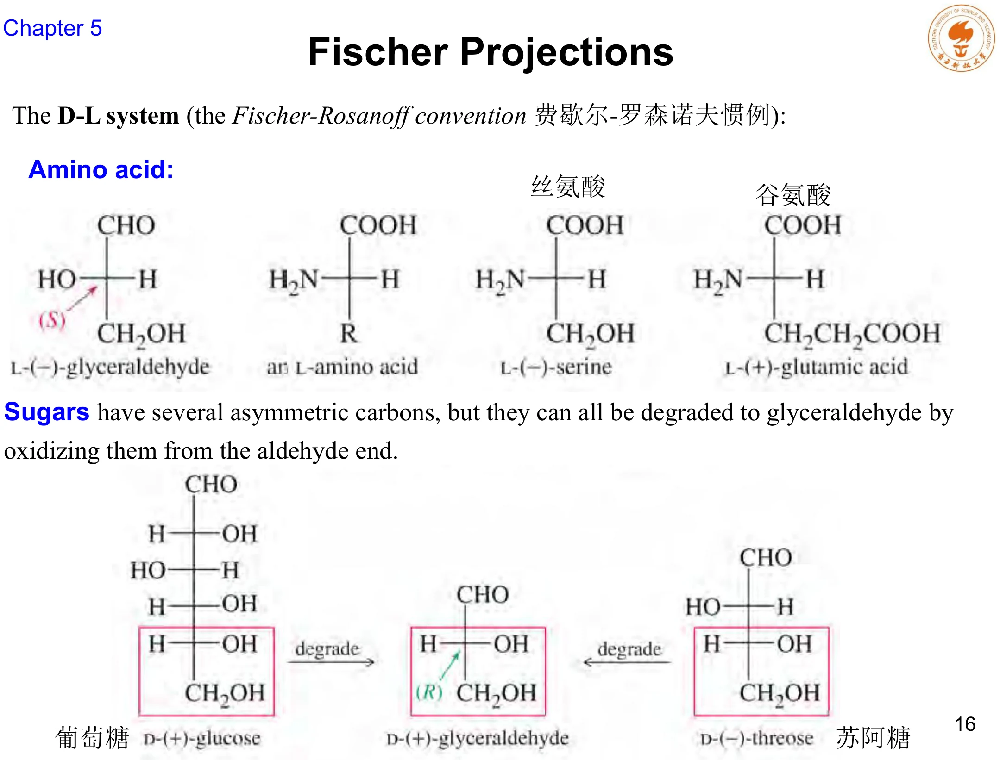
8. 非对映异构体
课件给出立体异构体的定义：原子以相同的次序相连，但在空间中的方向不同的异构体。在这个集合里，按“是否为镜面关系”再分两支：
对映异构体 · enantiomer
- 互为镜像，且不能完全重叠
- 所有非手性环境下的物理性质几乎完全相同
- 只有手性环境（如手性色谱柱、酶、其他手性分子）才能区分
非对映异构体 · diastereomer
- 不是镜面关系的立体异构体
- 包含顺反（几何）异构体，以及多手性中心体系中部分中心构型不同的异构体
- 物理性质不同，因此可以用常规方法分离
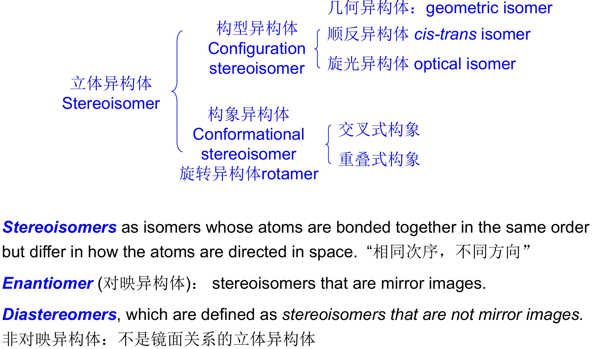
课件特别提醒：顺反（几何）异构体属于非对映异构体。这个归类常被忽略，但逻辑上很自然——顺-2-丁烯与反-2-丁烯显然不是镜面关系。环上的顺反关系（如 1,3-二甲基环戊烷的 cis/trans）同样属于非对映关系。
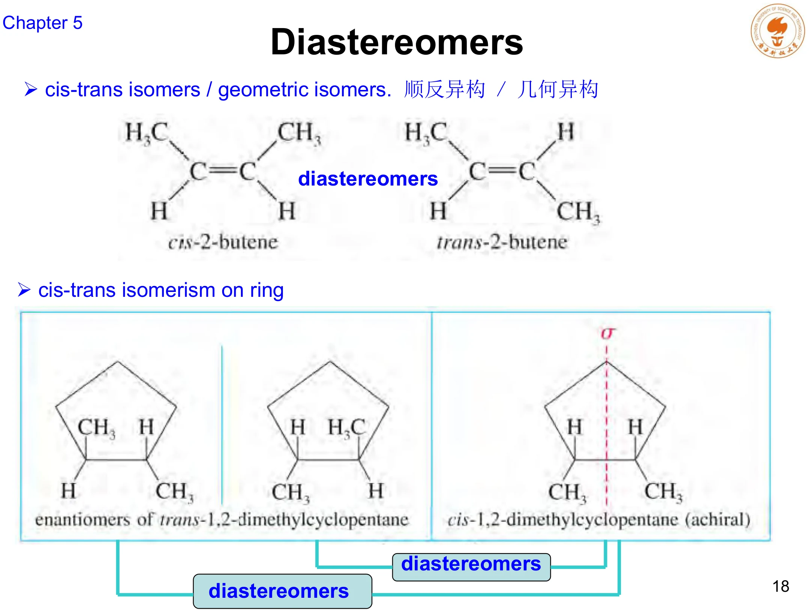
含两个手性中心的四个异构体怎么画
课件给出五步画法，用来系统地列出全部非对映体，而不是靠碰运气：
- 找出分子中全部手性碳原子。
- 任意画出其中一个立体异构体。
- 画出它的镜像——这就得到一对对映体。
- 在原来那个异构体的某个手性中心上，交换两个基团（只改这一个中心的构型）。
- 再画出新结构的镜像——于是得到第二对对映体。
四个结构之间的关系是：同一条竖线上的两个互为对映体；跨线的任意两个互为非对映体。
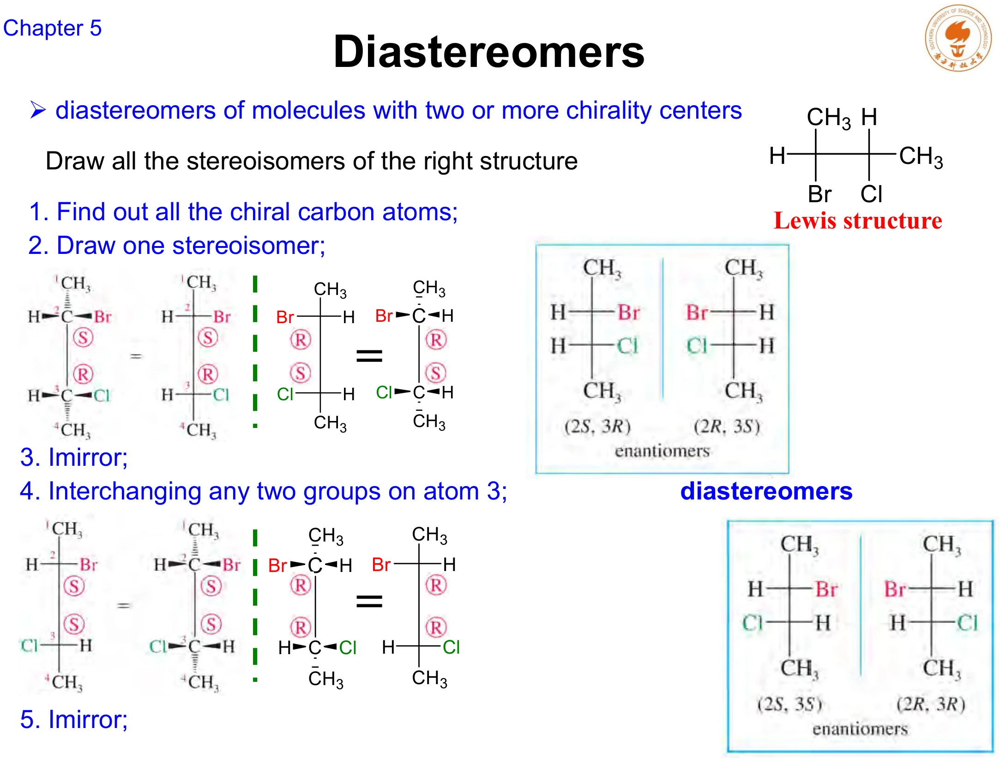
9. 2ⁿ 规则与它的失效
手性中心的数目与立体异构体的数目之间有一个简单的上界：含 n 个手性碳原子的分子，最多有 2ⁿ 个立体异构体。
| 手性中心数 n | 2ⁿ 上界 | 具体异构体 |
|---|---|---|
| 1 | 2 | (R) 与 (S) 一对对映体 |
| 2 | 4 | (R,R) / (S,S) 一对，与 (R,S) / (S,R) 另一对 |
| n | 2ⁿ | —— |
但课件紧接着强调这是上界，不是保证。“最多”两个字是这句话的关键：当分子内存在相同的取代基时，某些组合会因为分子内部出现对称面而变成同一个化合物，实际数目就少于 2ⁿ。
最标准的例子还是 2,3-二溴丁烷。按 2ⁿ 应该有 4 个异构体，实际只有 3 个：一对对映体 (±)，加上一个 meso 内消旋体——(2R,3S) 与 (2S,3R) 其实是同一个化合物，因为它内部有一个镜面，整体不手性。
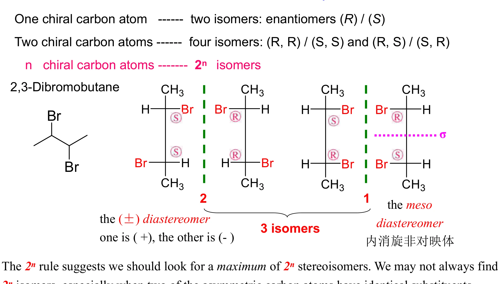
10. meso 化合物：一个被说坏了的定义
课件给出的定义是：meso 化合物是含有手性中心（通常是不对称碳）但整体无手性的化合物。2,3-二溴丁烷的 (2R,3S) 异构体就是标准例子——它有两个不对称碳，却是非手性的，因为它有一个内对称面，分子的一半是另一半的镜像。
课件明确批评了另一种常见表述：“含立体中心的无手性化合物”。它认为这是糟糕的定义，理由是立体中心（stereocenter）的范围比手性中心更大，它还包括产生顺反异构的双键碳。例如 2-丁烯的两个异构体都含有立体中心（双键两端的碳），它们都无手性，也都没有手性的非对映体——按这个定义就会被错误地叫作 meso，而它们显然不是。
所以准确的说法应当锁定在“手性中心”上：meso 化合物的手性中心必须存在于同一个分子内，且因为分子内的对称性而互相抵消。判断一个含多个手性中心的分子是否为 meso，最可靠的办法仍是找内对称面（internal mirror plane）——找到它就可以直接断定非手性。
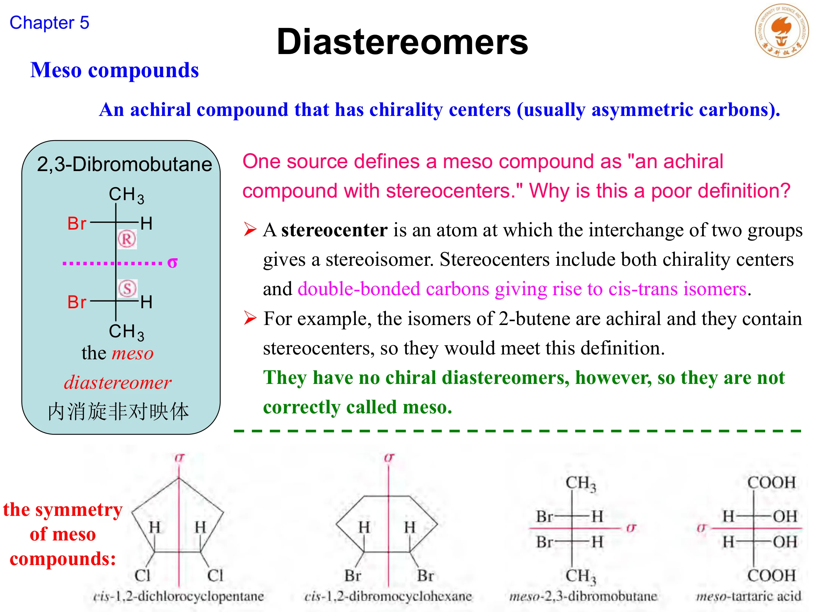
11. 非对映体与对映体的性质差异
这一节是整讲的枢纽，它解释了为什么“分离对映体”是一件难事，而“分离非对映体”却相对容易。
非对映异构体：性质不同
非对映体的物理性质不同——包括偶极矩、沸点、熔点、溶解度等。课件用 2-丁烯举例：顺式与反式的偶极矩不同。另一个常被引用的例子是糖类：大多数常见的糖彼此之间都是葡萄糖的非对映异构体，所以它们的熔点、溶解度都不一样。
正因为物理性质不同，非对映体可以用常规方法分离：蒸馏、重结晶、柱色谱都可以。这一点在后面的拆分实验中会被反复利用——手性拆分正是先把一对对映体转成一对非对映体，再用常规方法分开。
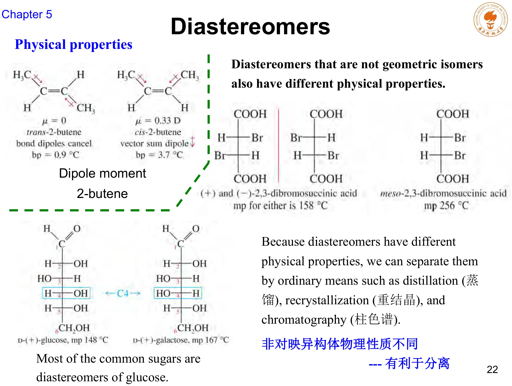
对映异构体：性质几乎相同
对映体的沸点、熔点、密度几乎完全相同，在非手性环境中无法用任何常规手段区分。要把它们分开，必须引入一个手性环境，让两个对映体与这个手性环境形成非对映的相互作用。
课件举的例子是肾上腺素（adrenaline）：它的两个对映体在普通溶剂中行为一致，只有通过旋光法（polarimetry）或手性环境才能区分。在生物体内情况则完全不同——受体本身就是手性的，所以两个对映体的生理活性可以相差极大。
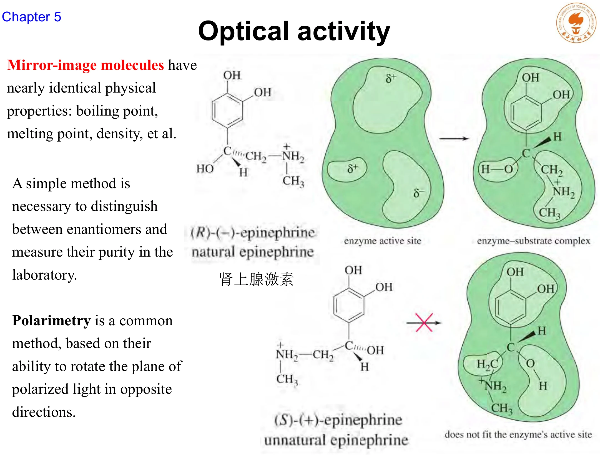
对映体在非手性环境里是“同一个人”，在手性环境里才分得开；非对映体在任何环境里都是“两个人”。这就是分离策略的全部依据：把对映体转成非对映体，问题就从“手性分离”降级成“普通分离”。
12. 平面偏振光与旋光测定
要测量光学活性，先要有平面偏振光（plane-polarized light）：只在一个平面内振动的光波。普通光（非偏振光）在垂直于传播方向的所有平面内振动；让它通过一个偏振过滤器（polarizing filter），只有振动方向与滤光器轴一致的成分能通过，出射光就变成了平面偏振光。
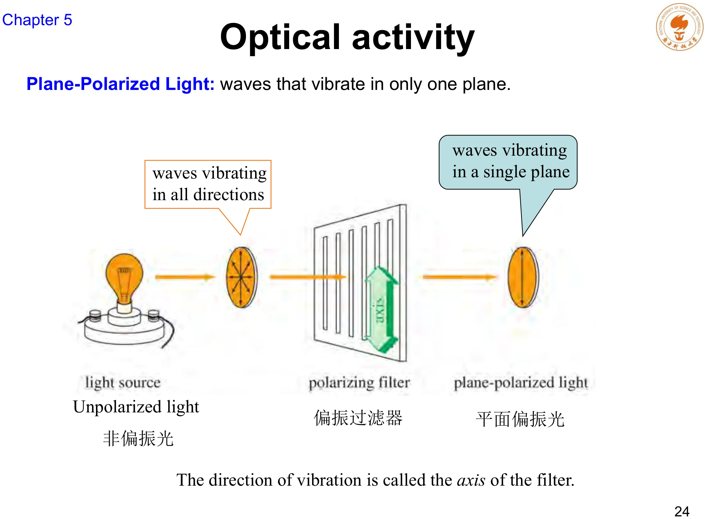
用两块偏振片就能验证这一点：当第二块偏振片的轴与第一块平行时，光能通过（最亮）；把第二块转过 90° 后，光被完全挡住（最暗）。测量光学活性的仪器——偏光计（polarimeter）——就是在这个原理上加了样品管和后继的检偏器。
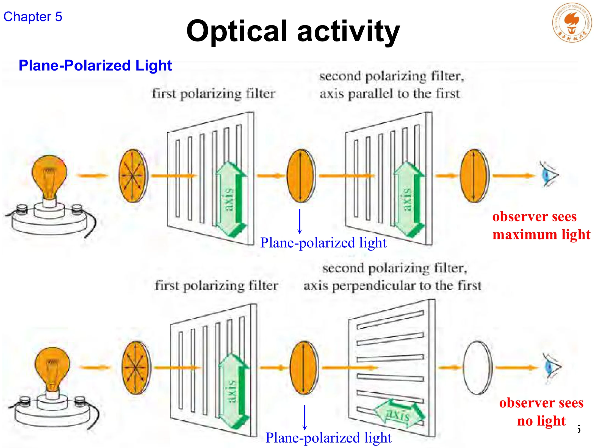
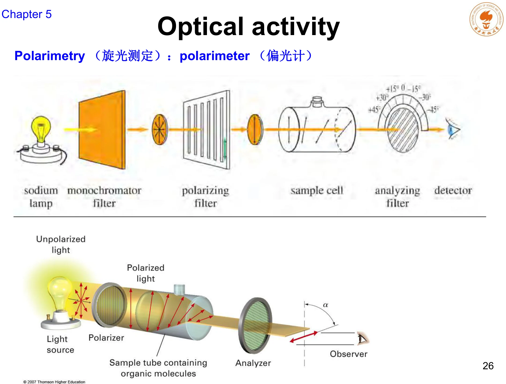
13. 光学活性与旋光方向
光学活性（optical activity）的定义是：手性化合物使平面偏振光的振动平面发生旋转的性质。能产生这种旋转的物质称为光学活性物质。
这里有两个必须分清的事实：
- 一对对映体旋转偏振光的角度完全相同，但方向相反。如果 (R) 使平面顺时针转 30°，那么 (S) 就使它逆时针转 30°。
- 无法预测某个对映体（(R) 或 (S)）究竟把光转向哪一边。旋光方向必须由实验测定，不能由构型推出，也不能由 D/L 推出。
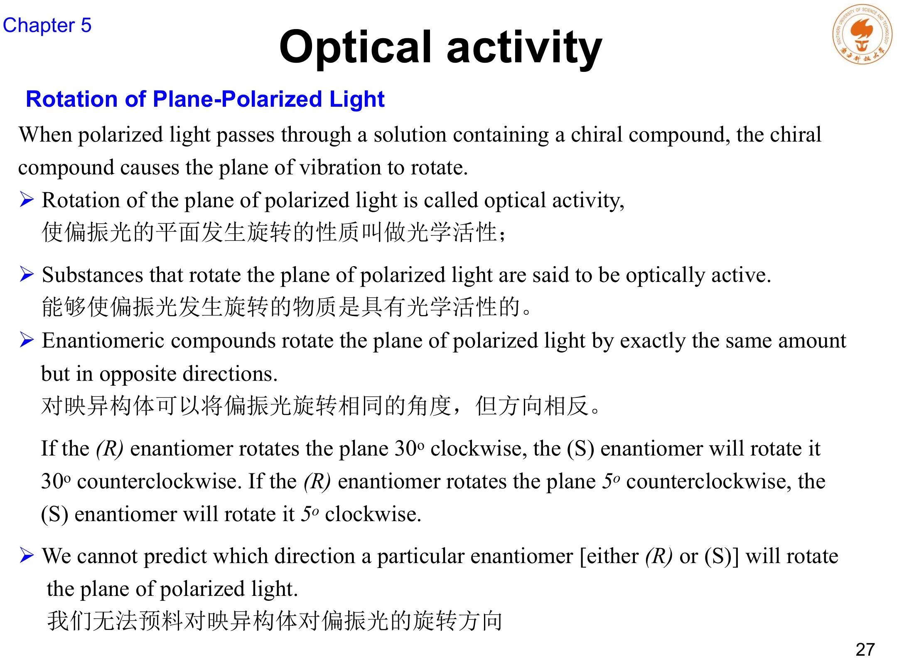
标记符号
| 旋光方向 | 符号 | 旧记号 | 示例 |
|---|---|---|---|
| 右旋（clockwise） | (+) | d | (+)-2-butanol 或 d-2-butanol |
| 左旋（counterclockwise） | (−) | l | (−)-2-butanol 或 l-2-butanol |
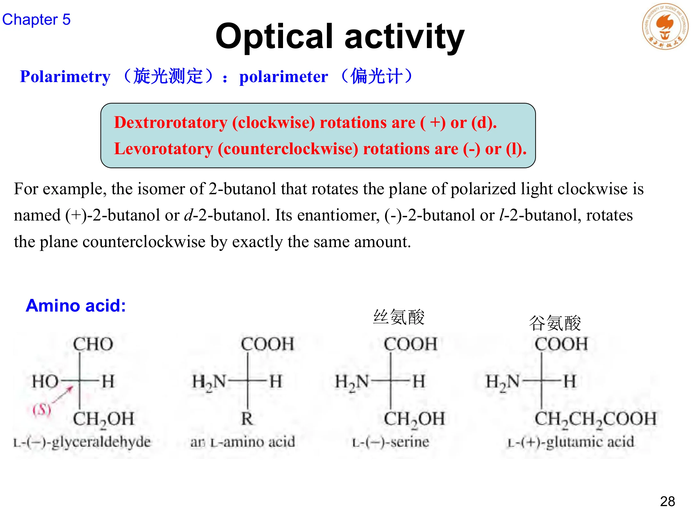
14. 比旋光度
实测的旋光角 α 会随实验条件变化，不能直接用来比较不同化合物。影响它的两个因素是浓度与样品管长度：浓度加倍，旋光角加倍；管长从 10 cm 变成 20 cm，旋光角也加倍。为了得到与条件无关的数值，定义比旋光度（specific rotation）[α] 为：
即用 10 cm（1 dm）的样品管、浓度为1 g/mL 时的旋光度。式中 c 是浓度，l 是管长（单位 dm）。上标 25 是测量温度（25 °C），下标 D 表示使用的是钠的 D 线（589 nm）——这两个标记都必须写明，因为旋光度同时依赖温度与波长。
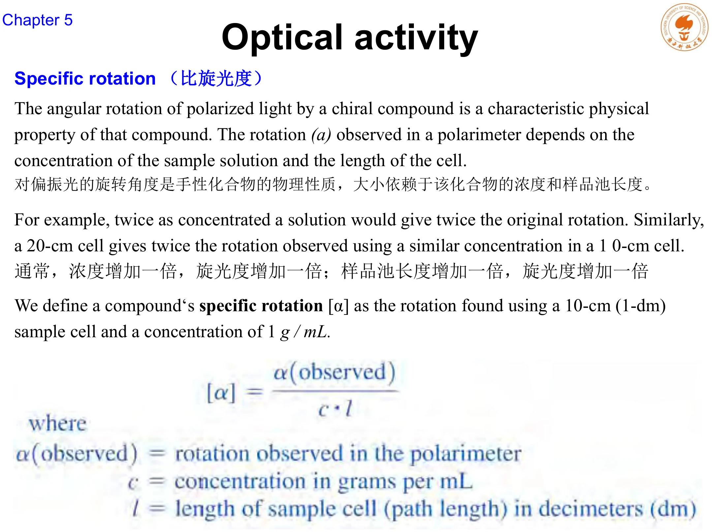
课件例题
将 2.0 g 的 (+)-glyceraldehyde 溶于 10.0 mL 水中，用 100 mm 样品管、钠 D 线、25 °C 测得旋光角为 +1.74°。求比旋光度。
解：先统一单位。浓度 c = 2.0 g ÷ 10.0 mL = 0.20 g·mL−1；管长 l = 100 mm = 10 cm = 1 dm。代入：
结果为正值，说明该物质在此条件下是右旋的。注意单位：比旋光度的单位是度（°），写的时候通常写成 +8.7°，而不是“+8.7°·mL·g−1·dm−1”，因为条件已经写在下标里了。
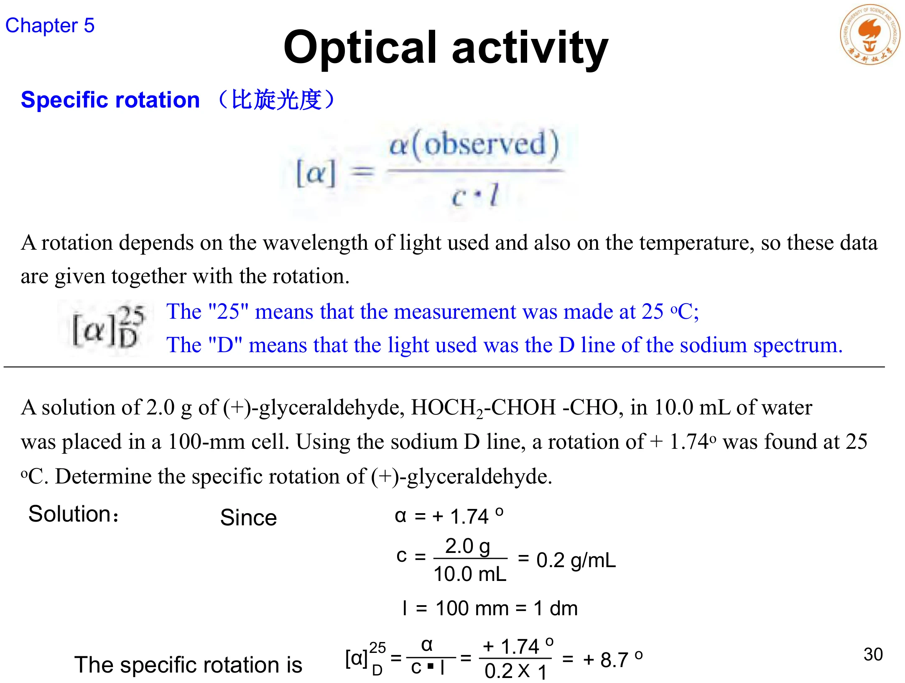
15. 消旋混合物与光学纯度
消旋混合物（racemic mixture，也叫 racemate）是等量的两个对映体的混合物。因为两个对映体旋转偏振光的角度相同、方向相反，等量混合后旋转恰好抵消，所以消旋混合物没有光学活性。标记为 (±) 或 (d,l)，例如 (±)-2-butanol。
课件明确指出：用无光学活性的反应物与催化剂，不能生成有光学活性的产物；手性产物必然以消旋混合物的形式得到。原因是反应从非手性起点出发，生成两个对映体的路径能量完全相同，因此机会均等。这条推论在讲不对称合成时会正好被用来作为对比——要让反应有选择性，就必须引入手性因素。
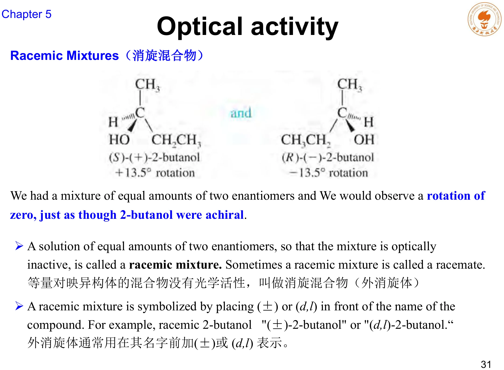
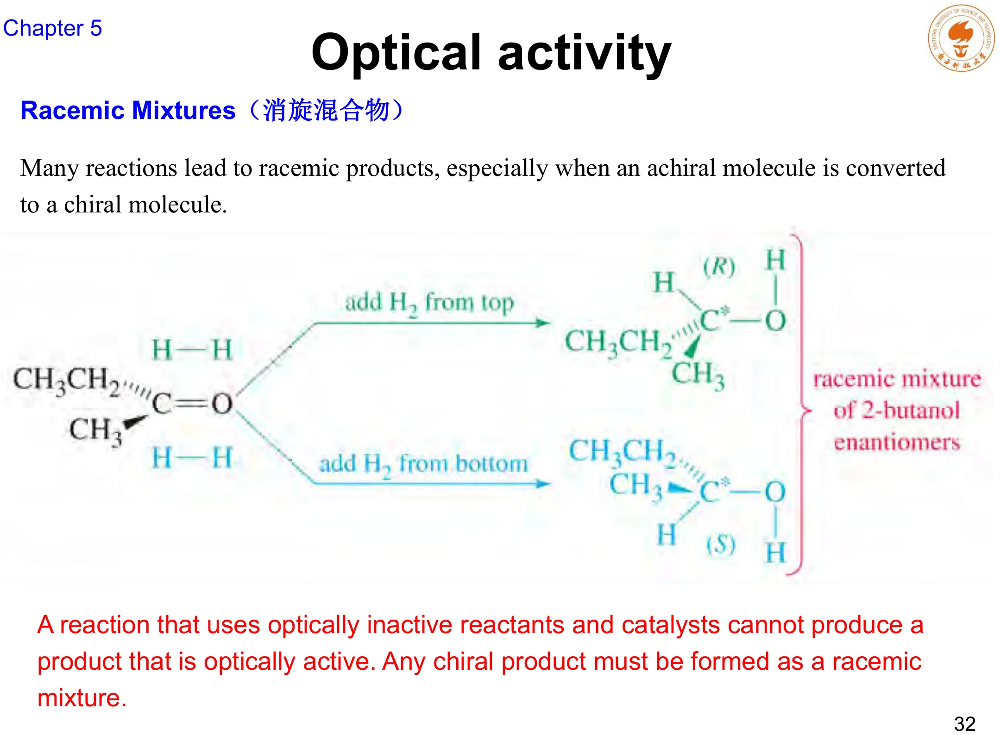
光学纯度与对映体过量
实际得到的往往不是纯对映体，也不是完全的消旋体，而是两者的混合物。衡量它的指标有两个，数值相同但表述不同：
- 光学纯度（optical purity, o.p.）= 实测比旋光度 ÷ 纯对映体的比旋光度。
- 对映体过量（enantiomeric excess, e.e.）= (主要对映体的量 − 次要对映体的量) ÷ 总量。
因为 α 与浓度成正比，两个定义里浓度、克数、百分数都可以代入，单位会自然抵消。课件用 2-butanol 举例：某样品的比旋光度为 +9.72°，而纯 (+)-2-butanol 为 +13.5°，则 o.p. = 9.72 / 13.5 = 72%。
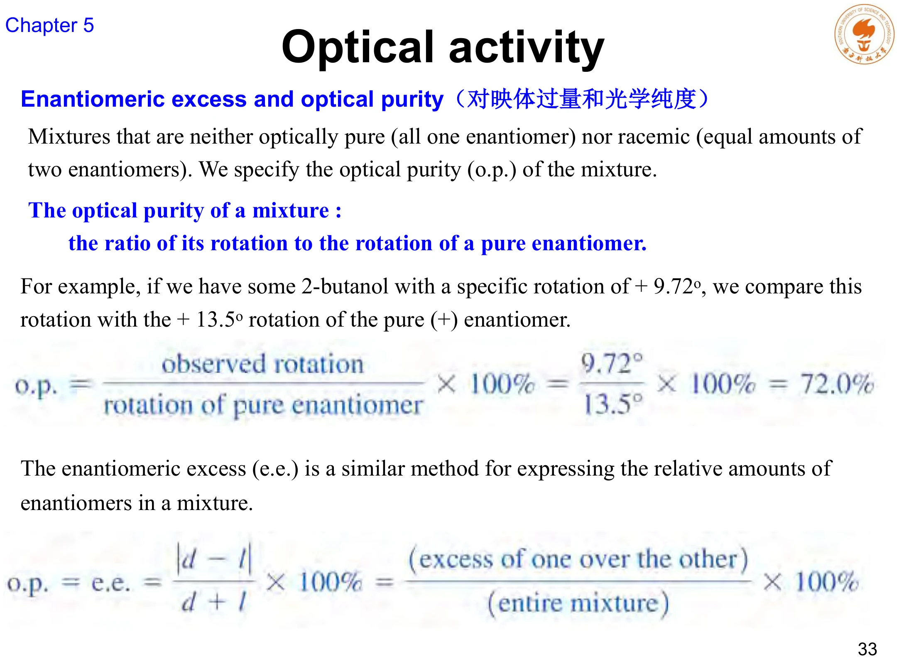
由光学纯度反推组成
得到 72% 之后，可以进一步算出两个对映体的实际比例。设主要对映体（d，即 (+)）所占百分数为 d，次要者（l）为 l：
d + l = 100% （两者之和）
两式相加：2d = 172% ⟹ d = 86%，l = 14%
所以该样品含 86% 的 d/(+) 与 14% 的 l/(−)。
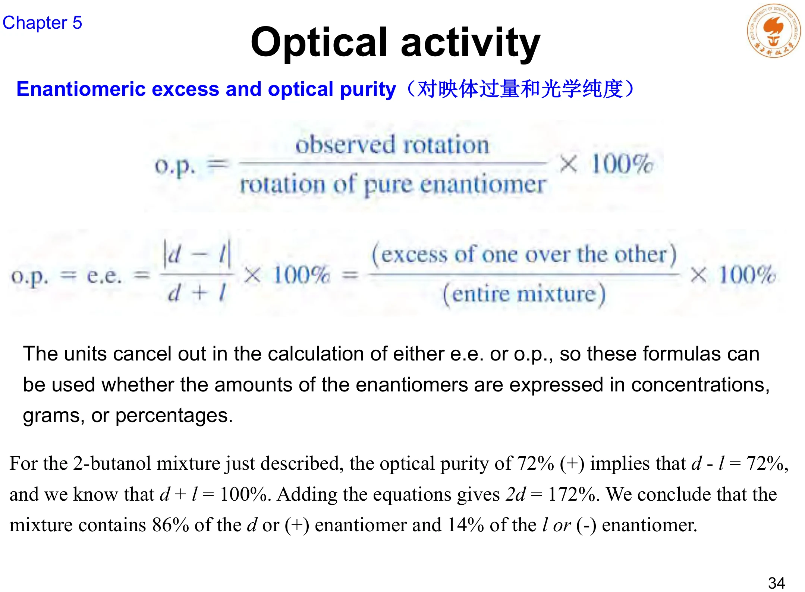
6.0 g (+)-2-butanol 与 4.0 g (−)-2-butanol 的混合物，纯 (+)-2-butanol 的比旋光度为 +13.5°。求 e.e. 与比旋光度。
思路：总量 10.0 g，e.e. = (6.0 − 4.0) / 10.0 = 20%。因 e.e. 与 o.p. 数值相同，比旋光度 = 0.20 × (+13.5°) = +2.7°。（课件第 35 页给出此题，解答按同一逻辑推得。）
16. 外消旋化
外消旋化（racemization）的定义是：由纯光学活性物质转变为外消旋体的过程。它不是一个次要的现象——课件用沙利度胺（Thalidomide）作为例子，标题直接写着“A nightmare for 50 years”。
R-构型抑制妊娠反应，S-构型致畸。但两者在体内会互相转化，服用纯 R 构型也无法保证无毒。这个案例说明：手性药物的安全性不能只靠“分离出单一对映体”来解决，还要考虑分子本身在生理条件下能否外消旋化。
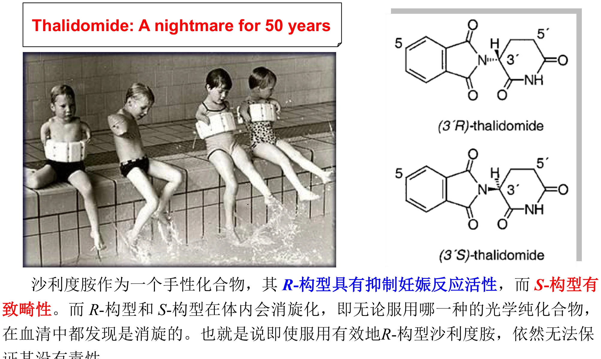
外消旋化的难易取决于结构
课件把易外消旋化的结构分成两类，判断依据都是“手性碳上的基团能否被暂时移走再以相反方向装回”。
① 能形成活性中间体
- 含一个手性碳原子，且该碳容易形成碳正离子、碳负离子或自由基等活性中间体时，极易外消旋化。
- 中间体一旦变成平面（如碳正离子的 sp² 中心），重新成键时从两面进攻的机会均等，构型就丢掉了。
- 例：肾上腺素在 H+ 作用下生成碳正离子，60–70 °C、4 小时即可外消旋。
② α-碳氢经烯醇中间体
- 不对称碳上的氢若与羰基相邻（即 α-碳氢），在酸或碱催化下可经烯醇（enol）中间体外消旋。
- 烯醇化把 sp³ 的手性碳变成 sp² 的烯醇碳，平面化之后重新质子化即可得到相反构型。
- 例：D-(−)-乳酸与 L-(+)-乳酸经烯醇互变互相转化。
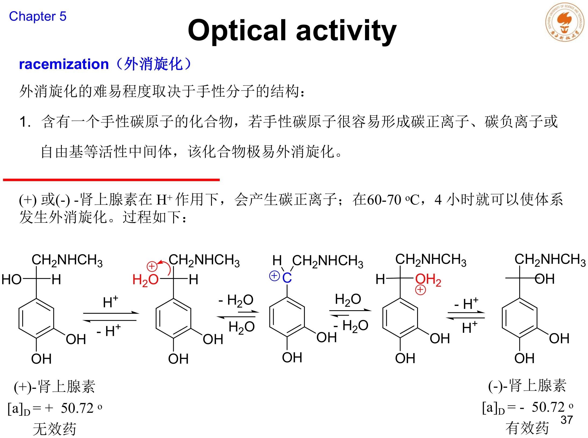
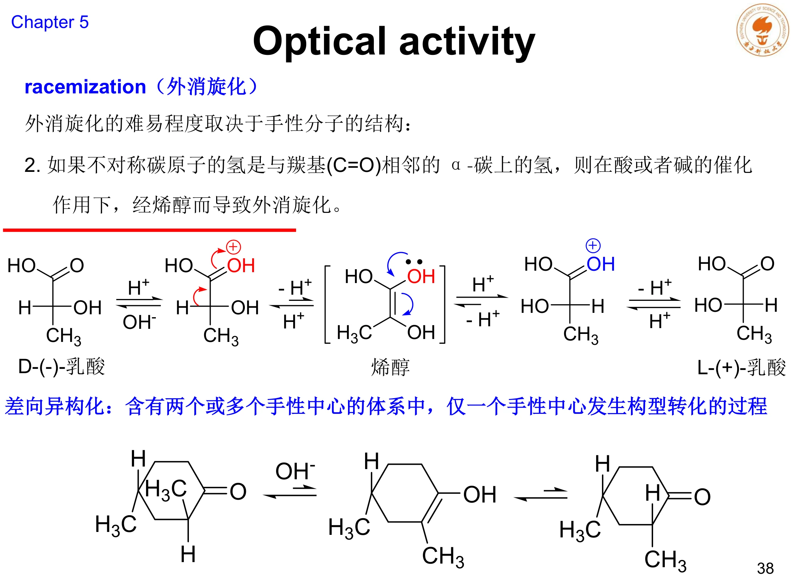
课件在此处引入一个相关但不同的概念：在含两个或更多手性中心的体系中，只有一个手性中心发生构型转化的过程，称为差向异构化。它与外消旋化的区别很清楚——外消旋化最终得到等量对映体（无光学活性），差向异构化只是把一个非对映体变成另一个非对映体，产物仍然有光学活性。含多个手性中心时，差向异构体之间正是非对映关系。
17. 拆分与不对称合成
由无手性起点出发只能得到消旋体，而药物、农药、材料往往只需要其中一个对映体。于是问题变成：怎样从消旋体中拿到单一对映体？课件给出的答案是两条路线。
路线一：手性拆分（resolution）
直接分离对映体是不可能的——它们在非手性环境中性质完全相同（第 11 节）。所以采取的是一种“先转成非对映体，再分开，最后拆回来”的策略：
- 让消旋体与一个手性拆分剂反应，生成一对非对映异构的盐（diastereomeric salts）。
- 因为这对盐是非对映体，它们的溶解度、结晶行为不同，可以用重结晶等常规方法分开。
- 分开之后，再把每个非对映盐分解，回收拆分剂，得到单一对映体。
这是传统的化学拆分方法，也是最经典的一条。它的全部可行性都建立在第 11 节那个结论上：非对映体的物理性质不同。
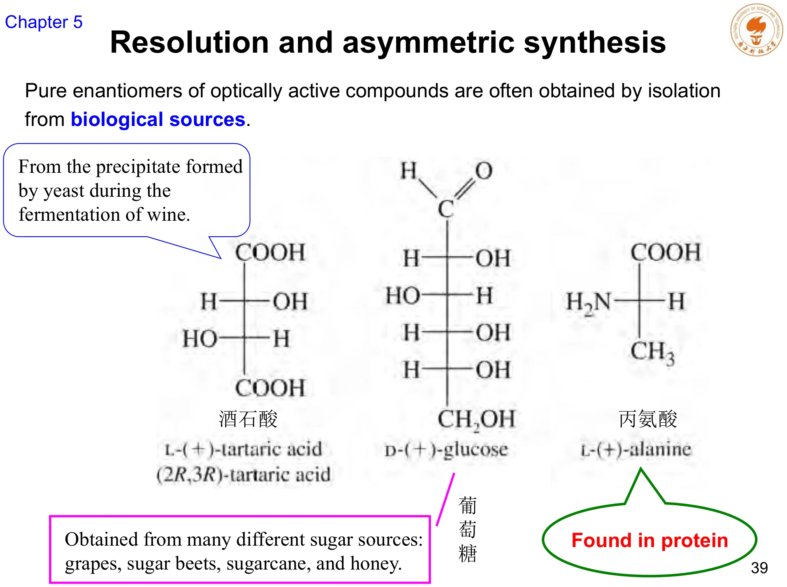
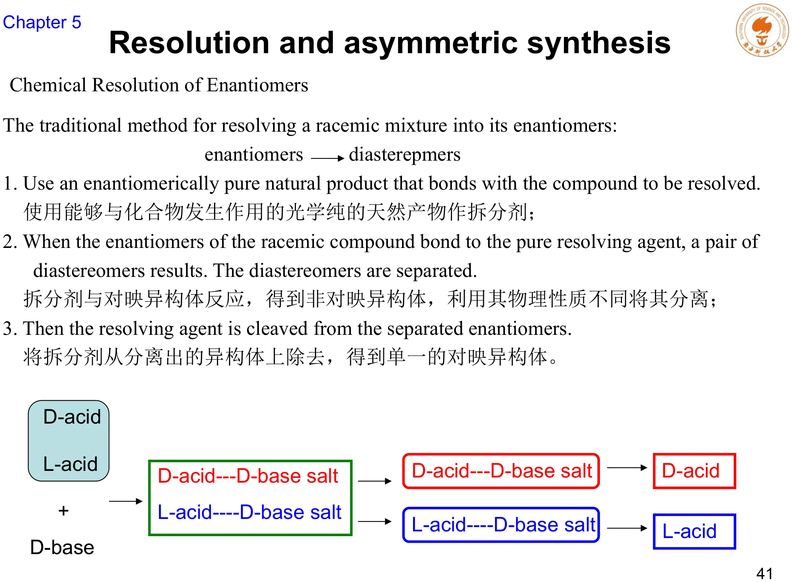
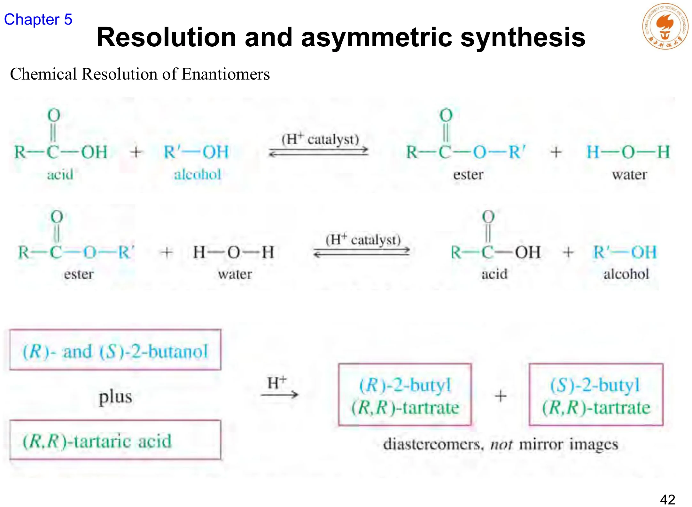
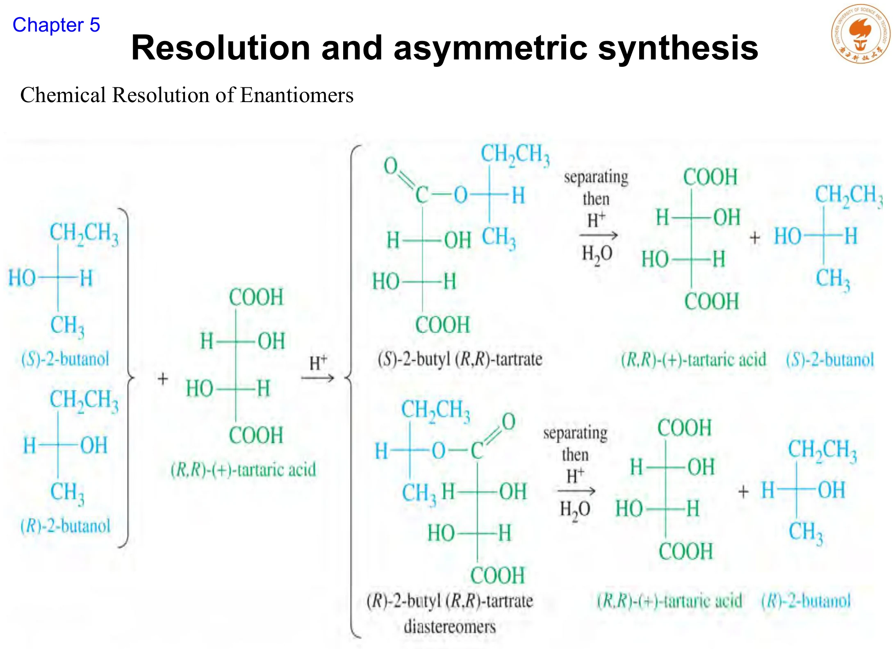
路线一之变体：手性色谱拆分
把化学拆分中的“手性试剂”换成一个手性固定相，就得到色谱法拆分。化合物与手性固定相之间形成非对映的相互作用，两个对映体的保留时间不同，于是先后被洗脱下来。这条路线不需要结晶，适用面更广。
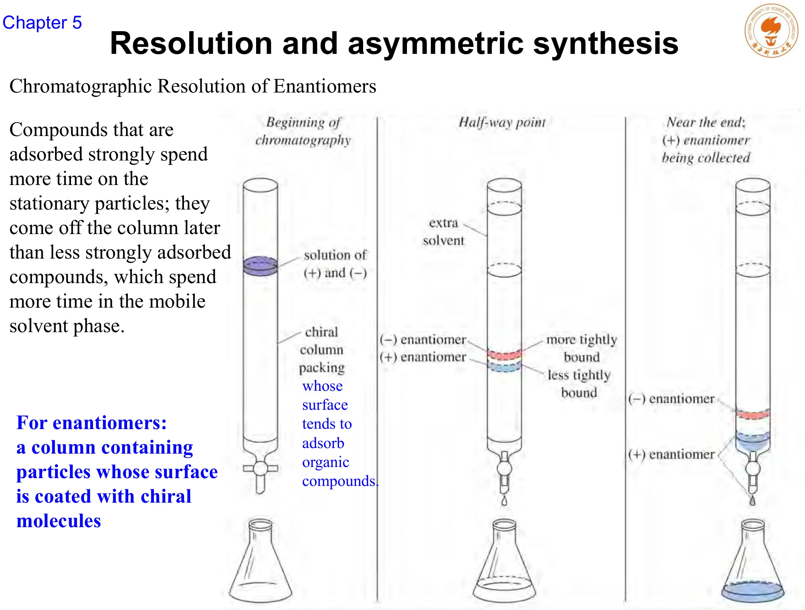
路线二：不对称合成（asymmetric synthesis）
另一条思路是根本不生成消旋体——在反应中直接引入手性因素，使生成某一个对映体的路径能量更低，从而优先得到它。手性因素可以是手性催化剂、手性配体、手性溶剂或酶。课件把生物催化（biocatalytic process）单独列出，因为酶本身就是最高效的手性催化剂。
拆分是“造完再分”，理论上最高只能拿到 50% 的目标产物（除非把不要的那个对映体再消旋化循环利用）；不对称合成是“只造想要的那个”，原子经济性更好，但需要合适的手性催化剂。
工业上两者常结合使用：先用不对称合成拿到较高的 e.e.，再用拆分把残余的次要对映体除去。理解第 11 节关于两类异构体性质差异的讨论，就能理解为什么这两条路线的难度差别如此之大。
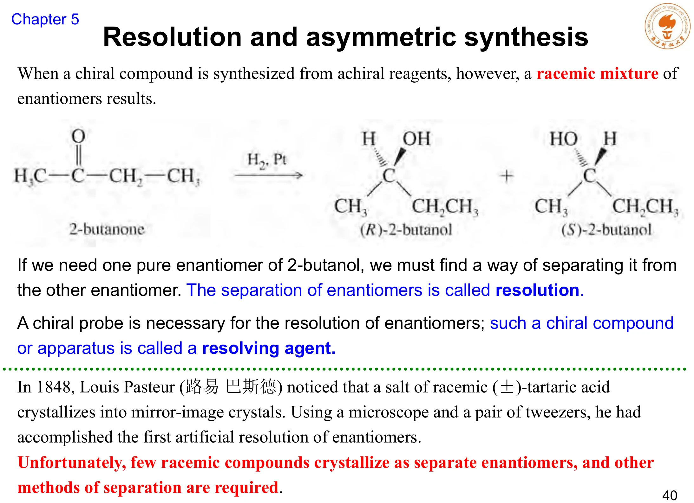
18. 教材对照：本讲在 Wade 第 5 章中的位置
| 本讲小节 | Wade 8th ed. | 要点 |
|---|---|---|
| 2–3 Fischer 投影式 | §5-4 | 水平键向前、竖直键向后；只允许纸面内转 180° |
| 4–5 判读与画法 | §5-4 | 五步画法；水平位置最低优先级基团需反转结论 |
| 6 镜像检验 | §5-5 | 原物—镜像—转 180°；重合即同一化合物 |
| 7 绝对与相对构型、D/L | §5-6 | 1951 年 X 射线；Fischer–Rosanoff 惯例以甘油醛为基准 |
| 8–9 非对映体与 2ⁿ 规则 | §5-7 | 顺反异构属非对映体；取代基相同时少于 2ⁿ |
| 10 meso 化合物 | §5-7 | 含手性中心但整体无手性；靠内对称面判定 |
| 11–14 光学活性与比旋光度 | §5-8 | 平面偏振光、偏光计、[α] = α/(c·l) |
| 15 消旋体与 o.p./e.e. | §5-8 | 等量对映体无旋光；o.p. 与 e.e. 数值相同 |
| 16 外消旋化 | §5-9 | 经碳正离子或烯醇中间体；差向异构化是单中心变化 |
| 17 拆分与不对称合成 | §5-9 | 非对映盐重结晶拆分；手性色谱；不对称合成与生物催化 |
19. 本课复习清单
- Fischer 投影式的两条约定是什么？为什么十字中心通常不画出碳？
- Fischer 投影式允许哪些操作、不允许哪些操作？旋转 90° 会把 R 变成什么？
- 从结构式画 Fischer 投影式的五步是什么？
- 为什么不能直接从 Fischer 投影式按 1→2→3 判定 R/S（当 H 在水平位置时）？两种处理办法分别是什么？
- 用“原物—镜像—转 180°”检验手性时，能重合说明什么？
- 2,3-二溴丁烷有几种立体异构体？为什么不是 4 种？
- meso 化合物的准确定义是什么？课件为什么批评“含立体中心的无手性化合物”这个说法？
- 为什么顺反异构体被归入非对映异构体？
- 非对映体与对映体在物理性质上分别有什么特点？这决定了它们各自用什么方法分离？
- 比旋光度 [α]25D 中，上标与下标分别代表什么？为什么需要指定它们？
- 某样品比旋光度为 +9.72°，纯 (+)-对映体为 +13.5°，光学纯度是多少？两个对映体各占多少？
- 用无光学活性的反应物与催化剂能否得到有光学活性的产物？为什么？
- 外消旋化的两条典型机理途径是什么？各自举一个例子。
- 差向异构化与外消旋化的区别是什么？
- 化学拆分为什么必须先把对映体转成非对映体？这个策略依据的是哪一条性质差异？
- 拆分与不对称合成相比，各自的优缺点是什么？
20. 课件勘误与提示
- 课件第 21 页明确批评了把 meso 定义为“含立体中心的无手性化合物”的做法，理由是该定义会把 2-丁烯这类含立体中心但无手性的分子错误地包含进来。本笔记采用课件的立场，把定义锁定在“含手性中心但整体无手性”。
- 本讲沿用了课件“Chapter 5”的章号，但课程页眉标为 Lect. 8 (Chapter 5-2)，与上一讲 Lect. 7 (Chapter 5-1) 共同构成第 5 章。各小节与 Wade 第 5 章的对应关系见第 18 节，其中 §5-4 至 §5-9 的具体节号按 Wade 8th ed. 的编排填写，使用前建议核对所用版本。
- 课件多个页面上的分子结构图是位图，个别碳上氢的数目在缩放时不易辨认（如第 5 页乳酸、第 16 页丝氨酸/谷氨酸）。本笔记在正文中独立写出优先次序与命名，不依赖图中标注，遇到与课件不一致时以正文的完整结构式为准。
- 课件第 24–26 页关于偏振光的插图来自通用物理教材，其中的滤镜示意为概念图，不表示实际偏光计的光路。实际仪器的结构见第 26 页。
- 课件第 37 页给出 (+)-肾上腺素 [α]D = +50.72°（无效药）与 (−)-肾上腺素 [α]D = −50.72°（有效药）。需要留意的是，左旋体才是生理活性高的那一个，这与“(+) 即活性”的直觉相反，也再次印证了旋光符号与生物活性之间没有可预测的对应关系。
- 课件第 35 页的练习只给出了题目，未在本页给出解答。本笔记在第 15 节按同一逻辑推出了 e.e. = 20%、比旋光度 +2.7°，如需与课件答案核对请注意这一点。
- 关于 Fisher 投影式的历史人物，课件拼写为“Hermann Emil Fischer”。Fischer 全名中 “Fischer” 首字母为 F，此处为课件的正常拼写，非笔误。
章节测验
15道单选、3道多选、2道判断、2道填空。按5道基础、10道中等、4道较难、3道拓展递进；交卷后查看答案与解析。